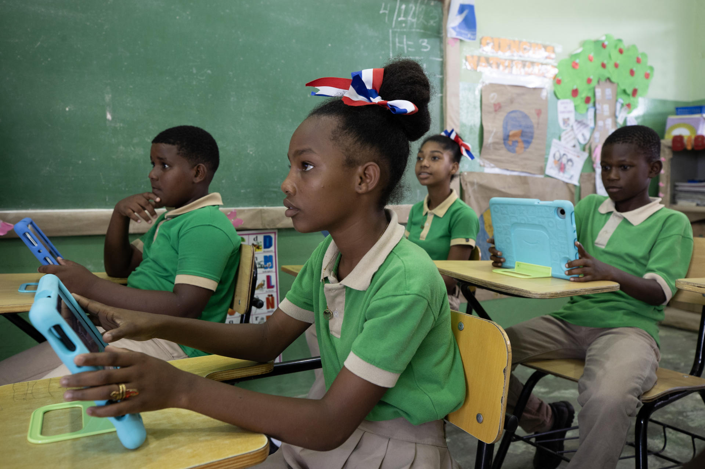

MinTIC, MEN, SENA
Colombia
Inicio: 2000

Estudiantes colombianos desarrollan competencias del siglo XXI mediante el uso de tecnologías móviles provistas por CPE.
 Logo Institucional
Logo Institucional
Logotipo oficial de Computadores para Educar (MinTIC/MinEducación).
Breve Historia
Computadores para Educar nació al inicio del siglo XXI como una estrategia interinstitucional inspirada en modelos de reutilización tecnológica internacional. Inicialmente enfocado en el reacondicionamiento de hardware donado por empresas privadas y entidades estatales para ser asignado a escuelas públicas rurales, el programa evolucionó con celeridad hacia una política integral de apropiación social, desarrollo profesional docente y gestión de infraestructura tecnológica de vanguardia.
Contexto Educativo
El programa se implementa en el sistema de educación pública de Colombia, con un énfasis prioritario y estratégico en sedes educativas rurales, periurbanas y vulnerables que históricamente han padecido exclusión socioeconómica y falta de acceso a conectividad, reduciendo las brechas digitales y de equidad del país.
Enfoque Pedagógico
El programa fundamenta sus procesos de formación docente en el modelo conceptual TPACK (Mishra & Koehler, 2006). Este enfoque garantiza que la entrega de infraestructura tecnológica esté intrínsecamente supeditada al fortalecimiento del conocimiento pedagógico y disciplinar de los educadores, promoviendo una transposición didáctica significativa de los contenidos digitales en el aula.
Metodología Activa
Promueve de manera decidida el Aprendizaje Basado en Proyectos (ABP) y el enfoque educativo STEM/STEAM (Ciencia, Tecnología, Ingeniería, Artes y Matemáticas). Los docentes formados por el programa diseñan experiencias de aprendizaje donde los estudiantes emplean la tecnología disponible para investigar problemáticas de sus comunidades agrarias o locales, diseñando soluciones tangibles y evaluables.
Uso de TIC
La estrategia integra la dotación de computadores portátiles, tabletas digitales, laboratorios pedagógicos de robótica, entornos virtuales de aprendizaje sin necesidad de conectividad permanente (contenidos precargados como Colombia Aprende) y software especializado de simulación científica y modelado matemático.
Aportes Innovadores
Su principal innovación radica en la articulación de un modelo de triple impacto: dotación de hardware de última generación, formación docente situada y continuada con acompañamiento en el aula, y una estrategia de demanufactura y gestión ambiental de residuos electrónicos (Cenit), única en la región latinoamericana.
Resultados o Impacto
Evaluaciones de impacto externas coordinadas por el Centro de Estudios sobre Desarrollo Económico (CEDE) de la Universidad de los Andes demostraron que el programa reduce significativamente las tasas de deserción escolar, incrementa los resultados de los estudiantes en las pruebas de Estado (Saber 11), y eleva la probabilidad de tránsito inmediato de los jóvenes rurales hacia la educación superior.
Análisis Crítico
A pesar de sus innegables aciertos logísticos y pedagógicos, la iniciativa enfrenta desafíos crónicos relacionados con la sostenibilidad de la infraestructura física en zonas con fluidos eléctricos inestables, la obsolescencia programada de los dispositivos y la persistente falta de conectividad a internet de banda ancha en la ruralidad profunda, lo que limita el uso de herramientas en la nube.
Conclusión
Computadores para Educar trasciende la noción asistencialista de entrega de equipos para consolidarse como una política pública de transformación cultural y pedagógica que ha democratizado el acceso a las TIC, sentando las bases operativas de la alfabetización digital en la educación pública colombiana.
Referencias
Computadores para Educar. (2022). Informe de gestión y resultados de impacto pedagógico. MinTIC / MEN.
Universidad de los Andes. (2015). Evaluación de impacto del programa Computadores para Educar en la calidad de la educación de Colombia. CEDE.


 Logo Institucional
Logo Institucional